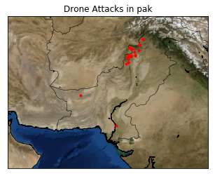

Pakistan Drone Attacks - 2005 to 2017 (Geo plotting analysis)
First : Pythonic Naive Way
This Methond uses basic implementation of basemap. Basemap is python library for choropleth and uses matplotlib
Second : Using Basic Google Maps
This is the easiest way to plot csv points over a map. Just need to upload the csv and get your points plotted with description
Third : Mapbox Simple
This is done using mapbox studio api(Basic) Though added some code for mapboxgl.popup for text box.
Fourth : Folium/Leaflet
folium builds on the data wrangling strengths of the Python ecosystem and the mapping strengths of the Leaflet.js library. Manipulate your data in Python, then visualize it in a Leaflet map via folium.
Fifth : D3/GeoJSON/TopoJSON
This is the most trickiest part to do. Using D3JS API to clearly visualize the active points i.e. the affected location.Append scalable vector graphics parent to the body. We will add our map to as a sibling to the parent svg. There are two ways either append everything or add everything to queue. Appending is done using svg.append({/*operation*/}) or d3.queue()